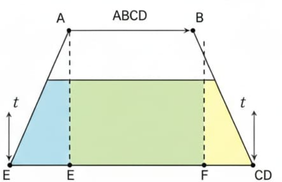

Pengantar Trapesium
Trapesium banyak dijumpai dalam kehidupan sehari-hari...
Pengertian Trapesium
Trapesium adalah bangun datar dua dimensi yang memiliki empat sisi, di mana tepat dua sisi di antaranya sejajar. Sisi-sisi yang sejajar ini disebut sebagai alas (biasanya disebut a dan b), sedangkan sisi-sisi lainnya disebut kaki trapesium. Tinggi trapesium (t) adalah jarak tegak lurus antara kedua alas tersebut.
Rumus luas trapesium dapat diturunkan dengan membagi trapesium menjadi dua bangun yang lebih sederhana, yaitu dua buah segitiga dan sebuah persegi panjang (atau jajar genjang).

Jenis-Jenis Trapesium
Berikut beberapa bentuk trapesium yang sering dijumpai:
Trapesium Sembarang
Trapesium yang keempat rusuknya tidak sama panjang.
Trapesium Siku-Siku
Trapesium yang memiliki dua sudut siku-siku.
Trapesium Sama Kaki
Trapesium dengan sepasang rusuk sejajar dan panjang sisi sama.
Sifat-Sifat Trapesium (Interaktif)
Klik tombol di bawah untuk melihat bagian sifat trapesium pada gambar:
Penjelasan Tambahan:
- Sudut kiri = sudut kanan.
- Memiliki dua diagonal yang tidak sama panjang.
- Jumlah sudut dalam trapesium adalah 360°.
- Tidak memiliki simetri lipat (kecuali trapesium sama kaki).
Cara Menemukan Rumus Keliling Trapesium
Sebuah trapesium memiliki sisi-sisi dengan panjang a, b, c, dan d. Maka keliling trapesium dapat dirumuskan sebagai berikut:
K = a + b + c + d
Dalam rumus ini:
- a dan b adalah panjang sisi-sisi sejajar trapesium.
- c dan d adalah panjang sisi-sisi yang tidak sejajar.
Contoh Penerapan:
Misalkan sebuah trapesium memiliki sisi sejajar dengan panjang 10 cm dan 15 cm, serta dua sisi lainnya masing-masing 6 cm dan 7 cm. Maka, keliling trapesium tersebut adalah:
Keliling = 10 cm + 15 cm + 6 cm + 7 cm = 38 cm
Kesimpulan:
Rumus keliling trapesium didapatkan dari konsep dasar keliling, yaitu menjumlahkan panjang semua sisi bangun datar tersebut. Tidak ada proses penurunan rumus yang rumit karena keliling pada dasarnya adalah penjumlahan sederhana.
Cara Menemukan Rumus Luas Trapesium
Berikut adalah penjelasan rinci langkah demi langkah untuk menemukan rumus luas trapesium:
-
Membagi Trapesium Menjadi Bangun Datar yang Dikenal
Misalkan kita memiliki trapesium ABCD dengan sisi AB dan CD sejajar (alas dan tutup). Tarik garis tinggi dari titik A dan B ke sisi CD, sehingga terbentuk dua segitiga (ADE dan BCF) serta satu persegi panjang (ABFE). -
Menentukan Luas Masing-Masing Bangun Datar
Luas Segitiga ADE:
Alas = DE, Tinggi = t
Luas = 1 2 × DE × t Luas Segitiga BCF:
Alas = CF, Tinggi = t
Luas = 1 2 × CF × t Luas Persegi Panjang ABFE:
Panjang = AB, Lebar = t
Luas = AB × t -
Menjumlahkan Luas Semua Bangun Datar
Luas trapesium ABCD = Luas ADE + Luas ABFE + Luas BCF -
Menuliskan Rumus Akhir Luas Trapesium
Luas =1 2× DE × t
Kesimpulan:
Rumus luas trapesium diperoleh dengan menjumlahkan luas seluruh bagian bangun datar yang membentuknya, yaitu dua segitiga dan satu persegi panjang. Rumus akhirnya adalah L 1 2 × (jumlah sisi sejajar) × tinggi.
Contoh Soal Luas Trapesium
Sebuah trapesium memiliki sisi sejajar dengan panjang 8 cm dan 12 cm, serta tinggi 5 cm. Maka luas trapesium tersebut adalah:
Luas trapesium dihitung dengan rumus:
L = 1 2 × (a + b) × t
L = 1 2 × (8 + 12) × 5
L = 1 2 × 20 × 5 = 50 cm²
Jadi luas trapesiumnya adalah 50 cm².
Kesimpulan:
Rumus luas trapesium didapatkan dengan membagi trapesium menjadi bangun datar yang lebih sederhana (dua segitiga dan satu persegi panjang), menghitung luas masing-masing, lalu menjumlahkannya. Hasil akhirnya adalah: 1 2 × (jumlah sisi sejajar) × tinggi.
LKPD Geometri: Keliling Trapesium
Hitunglah keliling trapesium di bawah ini!
LKPD Geometri: Luas Trapesium
Hitunglah luas masing-masing bangun trapesium di bawah ini!
Soal Cerita Trapesium
Jawablah soal cerita berikut dengan menuliskan langkah dan hasilnya di kolom jawaban.